Awwwards est le site qui référence des sites web qui sortent du lot de par leur conception, expérience utilisateur proposée et leur design. C’est une véritable référence pour les webdesigners et développeurs web dans le monde entier. Le concept est simple : chaque jour, des créateurs soumettent leur site web sur Awwwards. Le site est déposé dans la catégorie des nominés « Site of the day ». Ce dernier est jugé par des membres de la communauté Awwwards composée de designers, développeurs et agences. Le meilleur site de chaque jour de l’année paraît dans le livre « The 365 Best Websites Around the World ». Tous les mois, un site est élu « Site of the month ». À la fin de l’année, lors d’une cérémonie, le jury choisit le meilleur de l’année.
Le site Awwwards s’est étoffé depuis sa création en 2009. Les nominés sont répartis en 6 groupes :
- Sites of the Day
- Sites of the Month
- Sites of the Year
- Developer
- Mobile Excellence
- Honorable
Il existe également des thématiques de site qui sont appelées Categories et qui sont au nombre de 26.
Des sites très jolis mais pas forcément sobres ?

Notre curiosité nous a amené à analyser 10 sites nominés sur Awwwards. Nous avons sélectionné des sites nominés dans le groupe « Mobile Excellence ». Ces sites sont jugés sur 4 critères :
- Friendliness
- Performance
- Usability
- PWA
Awwwards attribue un score pour chacun des critères ci-dessus, ce qui permet de calculer ensuite un score total.
Chez Greenspector, nous avons décidé d’aller plus loin dans l’analyse de ces sites pour savoir s’ils répondaient bien à nos critères de sobriété.
Analyse complémentaire des sites en bas du classement
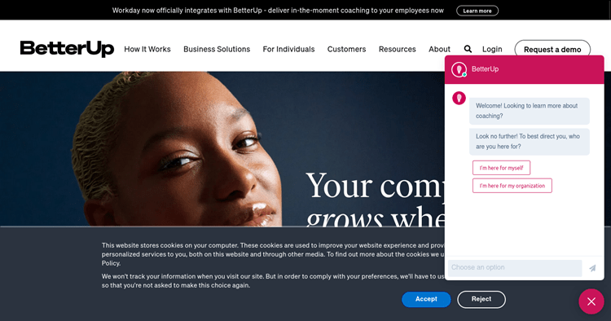
Plus de 200 requêtes HTTP pour charger la page puis 1 requête environ toutes les 10 secondes. Les requêtes pointent vers une cinquantaine de domaines.
On retrouve ces requêtes sur la RequestMap (outil créé par Simon Hearne) :
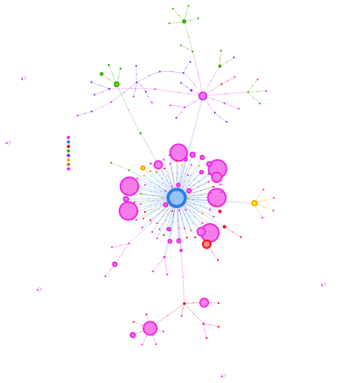
SI la présence du bandeau pour les cookies est légitime, le chatbot occulte une bonne partie de l’affichage, ce qui est problématique pour un site récompensé par un Awwward. Ce chatbot est-il vraiment nécessaire ? Ne devrait-il pas s’ouvrir (et se charger) qu’à la demande de l’utilisateur ?
A noter également (mais c’est malheureusement souvent le cas) qu’une trentaine de requêtes sont déclenchées dès qu’on accepte les cookies.
Lorsqu’on scrolle, le nombre de requêtes et la quantité de données transférées augmentent considérablement suite à l’intégration directe d’une vidéo Vimeo. L’utilisation du pattern facade aurait été plus judicieux. On remarque aussi un carrousel dont l’utilisation sur mobile est difficile (swipe exclusivement).
Le lazy-loading est bien implémenté mais on note différents effets visuels superflus (notamment parallaxe) qui viennent encore alourdir le site, notamment au scroll.
Lorsqu’on scrolle jusqu’au bas de la page, on en est à plus de 400 requêtes HTTP et plus de 12 Mo de données transférées.
Enfin, le plugin Wave détecte une quarantaine d’erreurs d’accessibilité et une trentaine d’erreurs de contraste.
Nous avions précédemment abordé le sujet des sites sobres mais nous sommes typiquement ici sur un site où un design très chargé ainsi que de trop nombreux scripts tiers dégradent fortement l’expérience utilisateur. On retrouve notamment cela lorsqu’on observe les mesures pendant les étapes de pause :
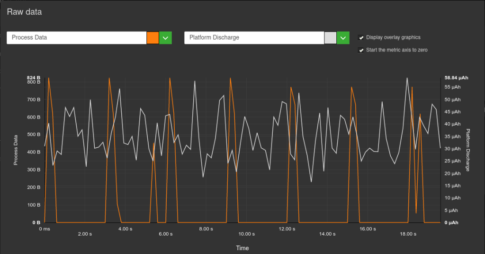
Dans l’idéal, il ne devrait pas y apparaître de transferts de données ni de pics aussi marqués pour la vitesse de décharge de la batterie. Ceci peut être dû à des services tiers ou à des animations.
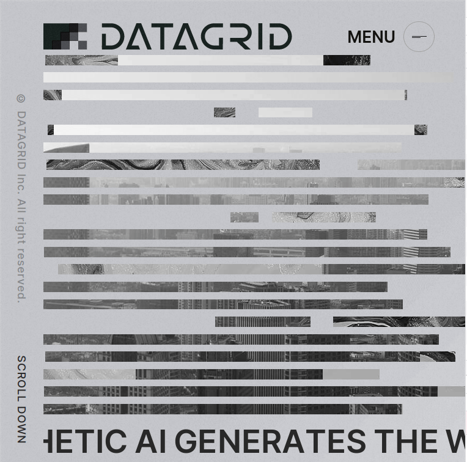
Pour ce site, le chargement ne finit jamais vraiment, comme l’attestent les outils de développeur de Firefox :
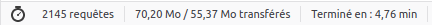
Les stats ici (temps de chargement compris) ne cessent jamais d’augmenter.
Le site a sans nul doute un intérêt du point de vue du design pur mais il s’agit ici d’un site qui n’est absolument pas utilisable :
- Les mouvements perpétuels (sans possibilité de contrôle) le rendront inaccessibles pour certains utilisateurs.
- Les requêtes en continu vers une quinzaine de domaines mettront à mal le forfait data d’une partie des utilisateurs.
- Les erreurs de contraste sont bel et bien présentes et la navigation au clavier plus que laborieuse.
Tout ceci se traduit sans surprise par un impact environnemental plus que conséquent avec en continu des transferts de données et sollicitation de la batterie des smartphones utilisés, même en background.
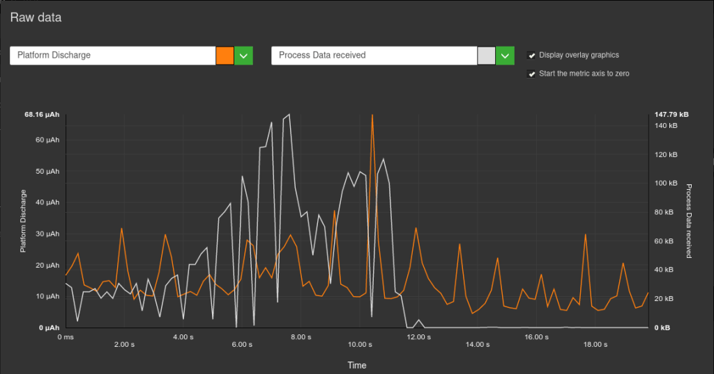
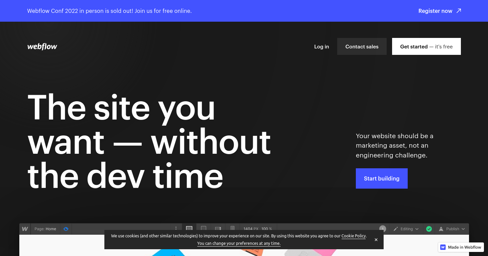
Les remarques sur les deux sites précédents s’appliquent en grande partie à celui-ci. Lors du chargement, on compte plus 200 requêtes pour 2 Mo transférés. En effet, on compte plus de 57 domaines, ce qui correspond bien au slogan du site proposant de faire de votre site web un atout marketing.
Si la taille des images est plutôt bien maîtrisée, l’essentiel du poids du site provient du JS avec plus de 100 requêtes dont une dizaine de plus de 100 ko chacune.
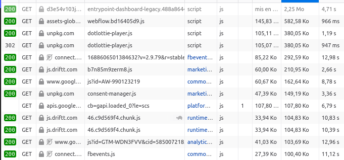
Le lazy-loading des images ne semble pas avoir été implémenté et le design de cette page d’accueil paraît de toute façon beaucoup trop lourd.
En revanche, les erreurs rapportées par le plugin Wave sont quasiment inexistantes.
Bref, il y aurait encore à faire afin de rendre cette page d’accueil plus sobre, de mieux intégrer certains éléments mais aussi de limiter le recours aux services tiers.
Analyse complémentaire des sites en haut du classement
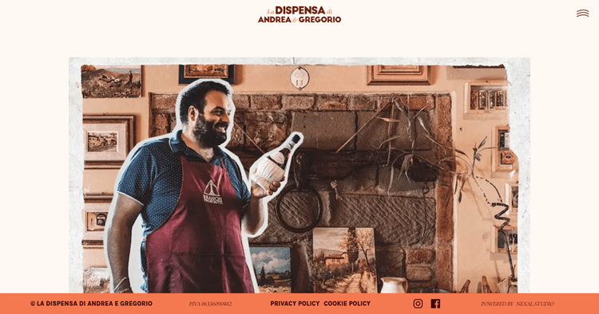
Ce site est plutôt léger (tout juste au-dessus d’1 Mo) et rapide à charger. On arrive tout de même à 60 requêtes HTTP pour le premier chargement, réparties sur une quinzaine de domaines.
Cette page d’accueil est visuellement riche mais reste claire. Les images sont optimisées (notamment via l’utilisation du format webp). Il est regrettable que le lazy-loading ne soit pas implémenté.
Le cache est globalement bien géré, ce qui est une très bonne chose.
En revanche, on remarque que les polices sont plutôt volumineuses, pour un total de 5 requêtes. Il faudrait privilégier les polices systèmes voire une police variable afin de limiter le nombre de requêtes.
Aussi, du point de vue du RGPD, il serait préférable d’éviter les fonts Google ou de les héberger soi-même.
Quelques erreurs d’accessibilité apparaissent avec Lighthouse.
Il faudrait limiter les animations au scroll et les effets au déplacement du curseur semblent superflus (voire nuisibles pour l’utilisateur).
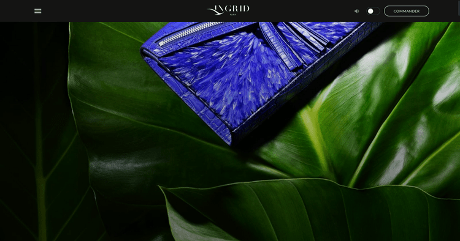
Ce site est en apparence assez sobre. Pas de requêtes vers des services tiers et des images globalement optimisées mais trop nombreuses. La mise en place du lazy-loading (de préférence nativement) serait une très bonne chose.
Le chargement est rendu plus long par le chargement par défaut d’une vidéo d’1 Mo ainsi que 20 requêtes environ rien que pour les polices.
Le cache est en revanche implémenté sur quasiment tous les éléments.
Même si Wave remonte peu d’erreurs d’accessibilité, les animations devraient être moins présentes au scroll sur la page. Actuellement, elles font de l’étape de scroll l’étape la plus impactante du point de vue de la vitesse de décharge de la batterie.
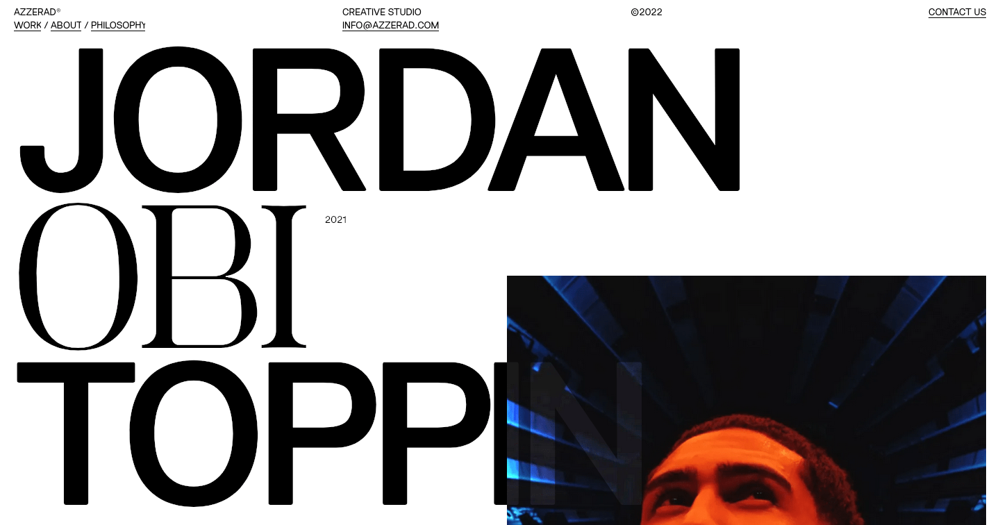
La tendance observée jusque-là semble se confirmer : de nombreuses images (optimisées mais la plupart sont chargées deux fois) et beaucoup d’animations.
15 requêtes rien que pour les polices mais assez peu de requêtes vers des services tiers.
Bref, un site qui gagnerait à être un peu plus sobre dans sa présentation et à aller plus loin dans l’optimisation technique pour éviter que les efforts (notamment d’optimisation des images) ne soient annulés par des mauvaises pratiques (comme le chargement en double des images).
Côté Wave, quelques erreurs d’accessibilités remontent mais surtout des problèmes de contraste.
Projection des données pour mesurer l’impact environnemental
Nous sommes allés plus loin dans l’analyse en réalisant une projection de données afin d’obtenir des détails supplémentaires nottament sur l’impact CO2, l’empreinte eau et l’empreinte sol.
Ici, l’énergie, les données échangées, le CPU et l’usage de la mémoire sont directement mesurés sur le device. Les impacts environnementaux et l’Ecoscore (basés sur les mesures mais aussi sur l’application des bonnes pratiques) sont calculés. Vous trouverez les détails dans l’article dédié sur le blog. Il est ainsi possible de comparer les différents sites, classés ici en fonction de leur Ecoscore (plus il est élevé, mieux c’est).
| Application | Energy consumed in light mode /1 min(mAh) | Energy consumed in dark mode /1 min(mAh) | Energy consumption reduction rate |
|---|---|---|---|
| 12,2 | 8,5 | 31% | |
| 11,7 | 8,5 | 28% | |
| 12,5 | 9,3 | 26% | |
| twitch | 10 | 7,5 | 25% |
| 11,3 | 8,8 | 22% | |
| 13,2 | 11,8 | 11% | |
| YouTube | 13,4 | 11,9 | 10% |
| 14,1 | 13,1 | 8% |
Conclusion
Lorsque le design de sites doit être jugé ou comparé, ceux qui ressortent en tête sont souvent des sites proposant un foisonnement d’images et autres effets visuels tels que des animations ou de la vidéo. Même si ces choix de designs peuvent être plus attractifs ou ludiques, ils nuisent souvent à l’accessibilité mais aussi aux impacts environnementaux… donc, in fine, aux utilisateurs eux-mêmes.
Même en cherchant des sites spécifiquement dédiés à la sustainability, on trouve des exemples présentant de nombreuses erreurs d’accessibilité ou transférant des fichiers de plus de 5 Mo au chargement.
Sur le site des Awwwards, on trouve bien parmi les critères pris en compte l’utilisabilité. Toutefois, un parcours rapide des notes obtenues montre que, même pour betterup.com qui présente de nombreuses erreurs d’accessibilité, la note d’utilisabilité est souvent très élevée. Il est normal qu’une part de subjectif, souvent liée à l’expérience personnelle et à la perception qu’on a de telles créations, entrent en ligne de compte. Néanmoins, une mesure objective devrait permettre de relativiser et nuancer le propos, aussi bien pour l’accessibilité que pour la sobriété (voire la performance). Ces contraintes supplémentaires pourraient être sources de créativité et donner lieu à des expériences utilisateur innovantes tout en restant respectueuses des utilisateurs et de la planète.